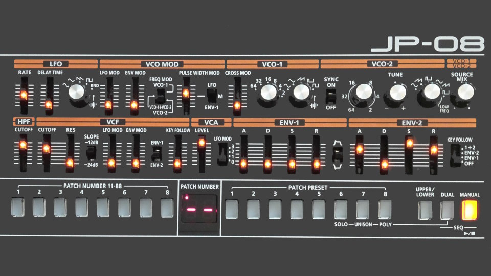

In this position, White already has an overwhelming advantage. Playing Qxg7 based on simple greed is very tempting, but White has an even better move, allowing mate in three. As with all mating puzzles posted here, this position comes from a real game of Chess.
Now that the Jupiter-08 synthesizer by Roland has come out, I should compare it to its spiritual ancester, the JP-08.
When the JP-08 came out, an analog polyphonic was very expensive. Yes, synthesizers were quite affordable; I was able to get a very flexible Juno-Di was under $600, but it was somewhat thin and digital sounding. Analog monophonics were around at reasonable prices (Minibrute, etc.) but analog polyphony was still quite expensive.
The JP-08 gave us something which sounded really nice and analog (and, at the time, there were huge debates about whether ACB sounded like analog) and reasonable, if not great, polyphony for under $500. It made it possible for me to give the album I was working on at the time a very much analog sound, and it really improved the sound of the albums I released that decade. Even my most recent album from last year has one song which is 100% JP-08 (with external effects).
Soon after, the Korg Minilogue made real analog polyphony affordable, and Behringer later on made polyphonic analog no longer a Velben good.
The JP-08 filled a niche, low cost (almost) analog polyphony, which was not being filled by anyone else at the time, so it made a lot of sense to get one.
The JP-08’s spiritual successor, the just-released Jupiter-08, is for a very different market. As I already mentioned, real analog polyphony is a lot more cost effective than it was. In addition, the Jupiter-08 uses the same sound engine (ABM) as their Zen Core synthesizers, which has more polyphony but sounds less analog than the JP-08’s ACB did. The JP-08 tried to sound as much like a classic Jupiter-8 as possible using digital circuitry; the Jupiter-8 emphasizes polyphony, effects, and flexibility over being an accurate Jupiter-8 recreation.
Salon is no more.
Salon has always been a dishonest rag. Back in 2014, they ran a series of BS articles about how AA doesn’t work, even though science, at the time, had strong evidence for AA being effective. By 2020, with the Cochrane report on AA, the scientific consensus was overwhelming showing that AA works—evidence that Salon completely ignored because it went against their world view. In fact, their final article about AA, from 2023 (i.e. three years after the 2020 Cochrane report), made the false claim that “there is no evidence for the morally stark, abstinence-based mode of recovery”.
Salon was very loose with facts and pushed an agenda. The company dying this last week is a blessing.
1. Rd7+! Ke6 2. Rd8+ Ke7 3. Qd7#